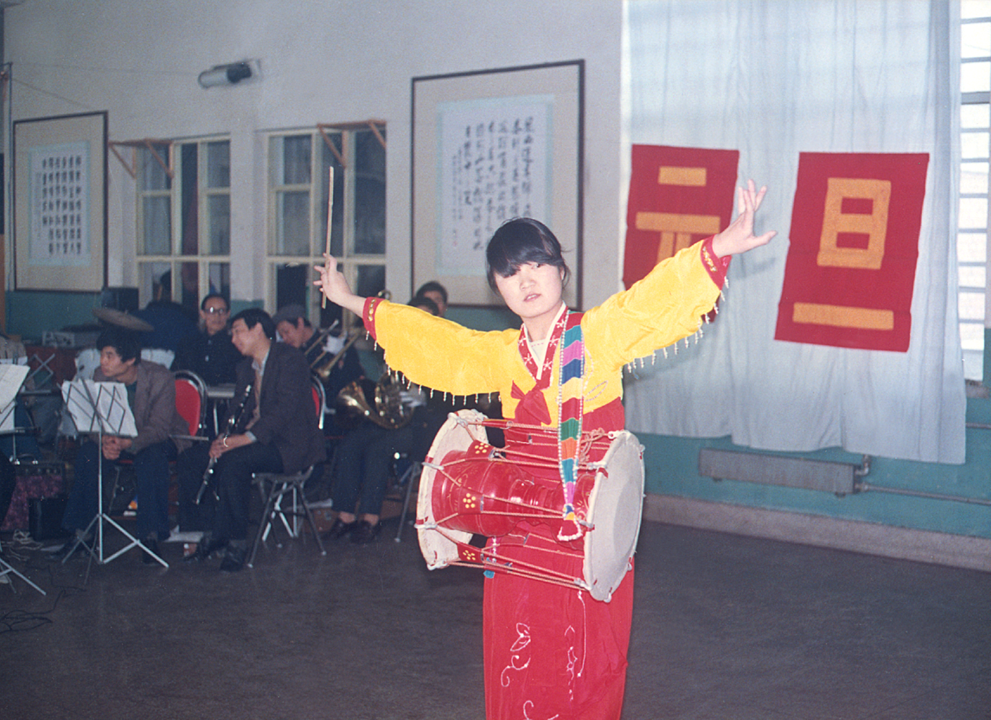
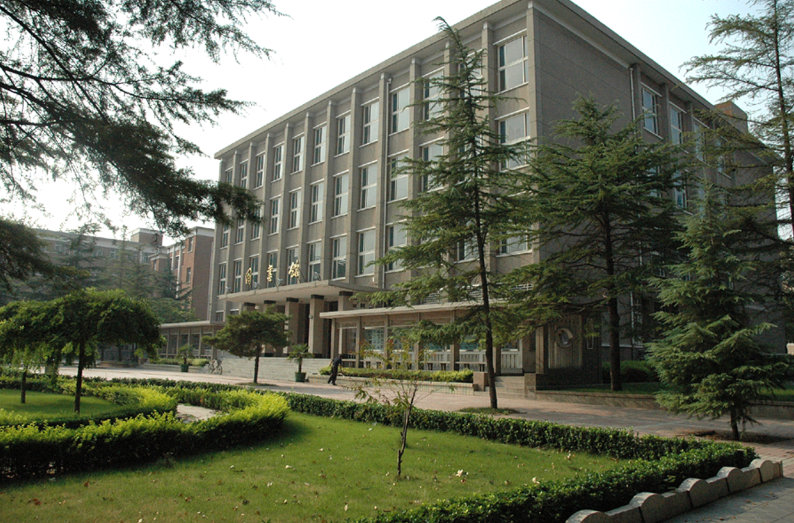

邯郸时期华水校园

邯郸时期文艺汇演留念
 邯郸时期文艺汇演留念
邯郸时期文艺汇演留念
邯郸时期校园运动会留影
 邯郸时期表彰三好学生
邯郸时期表彰三好学生

邯郸时期图书馆
始建于1951年9月，其前身为隶属于原水利部的北京水利学校图书馆，1953年9月迁入北京西郊紫竹院新建校址。到1958年10月建立北京水利水电学院时中文图书增加到40138册。1964年成立了图书馆委员会。1970年图书馆随学院搬迁至河北邯郸，1971年更名为“河北水利水电学院图书馆”，1978年更名为“华北水利水电学院图书馆”，1982年2月迁入新建的图书馆楼，馆舍面积4100m2，藏书达到40万册，在岗职工36人。
始建于1951年9月，其前身为隶属于原水利部的北京水利学校图书馆，1953年9月迁入北京西郊紫竹院新建校址。到1958年10月建立北京水利水电学院时中文图书增加到40138册。1964年成立了图书馆委员会。1970年图书馆随学院搬迁至河北邯郸，1971年更名为“河北水利水电学院图书馆”，1978年更名为“华北水利水电学院图书馆”，1982年2月迁入新建的图书馆楼，馆舍面积4100m2，藏书达到40万册，在岗职工36人。
邯郸时期教室
1972年11月7日，河北水利水电学院在邯郸中华大街南头建校，岳城建教学点。1978年9月28日，河北水利水电学院改名为华北水利水电学院。
1972年11月7日，河北水利水电学院在邯郸中华大街南头建校，岳城建教学点。1978年9月28日，河北水利水电学院改名为华北水利水电学院。
邯郸时期食堂
1980年1月3日，撤销岳城教学基地办公室，决定校的房屋、设备等暂时移交水利电力部第五工程局。1981年11月，国务院批准华北水利水电学院为首批硕士学位授予权单位。1983年12月，根据水利电力部指示，华北水利水电学院北京研究生部划归北京水利电力经济管理学院领导，对外仍称华北水利水电学院北京研究生部。
1980年1月3日，撤销岳城教学基地办公室，决定校的房屋、设备等暂时移交水利电力部第五工程局。1981年11月，国务院批准华北水利水电学院为首批硕士学位授予权单位。1983年12月，根据水利电力部指示，华北水利水电学院北京研究生部划归北京水利电力经济管理学院领导，对外仍称华北水利水电学院北京研究生部。
 邯郸时期实验楼
邯郸时期实验楼 1984年9月23日，水利电力部同意汪胡桢任华北水利水电学院名誉院长。1986年起，学校先后与中国科学院地质研究所、中国农科院农田灌溉研究所、清华大学、同济大学等20余所高等院校和科研院所联合培养博士研究生。1987年6月30日，国家教委同意将华北水利水电学院成建制地由河北省邯郸市迁至河南省郑州市。
邯郸时期教学楼
截至2020年12月，学校有9个国家级、省级卓越计划建设专业，15个国家级、省级综合改革试点专业，17个国家级、省级特色专业建设点，其中有3个国家特色专业，2个国家专业综合改革试点项目，5个国家级“卓越工程师教育计划”试点专业，14个河南省级特色专业，13个河南省级综合改革试点专业，5个河南省级“卓越工程师教育计划”试点专业。
截至2020年12月，学校有9个国家级、省级卓越计划建设专业，15个国家级、省级综合改革试点专业，17个国家级、省级特色专业建设点，其中有3个国家特色专业，2个国家专业综合改革试点项目，5个国家级“卓越工程师教育计划”试点专业，14个河南省级特色专业，13个河南省级综合改革试点专业，5个河南省级“卓越工程师教育计划”试点专业。
邯郸时期上课留影
华北水利水电学院，源自1951年建校的北京水利水电学校，后来京校外迁至邯郸，命名华北水利水电学院，1990年该校主体南迁郑州，留邯部分组成华北水利水电学院邯郸分部，2002年邯郸分部并入河北建筑科技学院。
华北水利水电学院，源自1951年建校的北京水利水电学校，后来京校外迁至邯郸，命名华北水利水电学院，1990年该校主体南迁郑州，留邯部分组成华北水利水电学院邯郸分部，2002年邯郸分部并入河北建筑科技学院。
邯郸时期宿舍楼
邯郸，河北最南端的城市，位于晋冀鲁豫四省交汇中心位置，西依太行，东联平原，地理位置重要。战国时期，这里是七雄之一的赵国国都，秦汉时期，这里也是有名的大城。汉代以后，随着周边邺城、大名、广府等城市的先后兴起，邯郸的重要性逐渐下降，不再是国都、郡城，转而化身为一座普通县城。即便如此，邯郸仍然数千年来不曾更改名称，该地地名始终为“邯郸”，建制也未曾中断。
邯郸，河北最南端的城市，位于晋冀鲁豫四省交汇中心位置，西依太行，东联平原，地理位置重要。战国时期，这里是七雄之一的赵国国都，秦汉时期，这里也是有名的大城。汉代以后，随着周边邺城、大名、广府等城市的先后兴起，邯郸的重要性逐渐下降，不再是国都、郡城，转而化身为一座普通县城。即便如此，邯郸仍然数千年来不曾更改名称，该地地名始终为“邯郸”，建制也未曾中断。